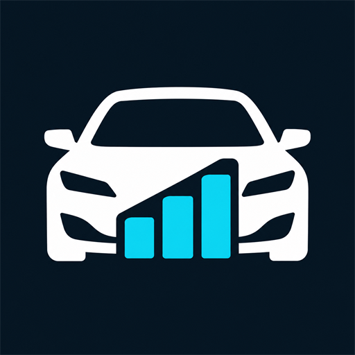

Bieżący szacunek zarobków
Orientacyjny wynik aktualizowany po dodaniu kolejnej zmiany, bez czekania na rozliczenie partnera.

DriverStatW przygotowaniu do testów
DriverStat pomaga kierowcom zapisywać zmiany, kontrolować koszty i na bieżąco szacować rzeczywisty wynik pracy.

Co potrafi
Pulpit, historia zmian, statystyki, koszty samochodu i terminy serwisowe działają już w aplikacji.
Orientacyjny wynik aktualizowany po dodaniu kolejnej zmiany, bez czekania na rozliczenie partnera.
Paliwo, serwis i inne wydatki uwzględnione tam, gdzie sprawdzasz wynik pracy.
Czytelne podsumowania czasu, przejazdów i szacowanego wyniku.
Obecny projekt zakłada lokalne przechowywanie danych, bez konta i bez wysyłania zapisów na serwer.
Aplikacja w praktyce


To aktualny wygląd wersji przygotowywanej do testów. Widoczne kwoty i dane są przykładowe.
Dlaczego DriverStat
Stawki, prowizje, paliwo, koszty i czas pracy szybko przestają mieścić się w głowie. DriverStat ma zebrać je w jednym miejscu i pokazać prosty, orientacyjny obraz tygodnia.
Rozwój
Aplikacja przeszła testy techniczne. Następny etap to zamknięte testy Google Play i poprawki wynikające z użycia jej przez kierowców.
Pulpit, zmiany, statystyki, rozliczenia, samochód i serwis działają razem.
Finalizacja materiałów sklepowych i wersji do testów zamkniętych.
Zbieranie opinii kierowców i poprawki przed udostępnieniem produkcyjnym.
FAQ
Jeszcze nie. Przygotowujemy wersję do zamkniętych testów Google Play. Po testach i poprawkach aplikacja będzie mogła przejść do wydania produkcyjnego.
DriverStat prezentuje pomocnicze szacunki na podstawie danych wpisanych przez użytkownika. Nie zastępuje oficjalnego rozliczenia, księgowości ani porady finansowej.
Dane są przechowywane lokalnie na urządzeniu. Aplikacja nie wymaga konta ani synchronizacji z chmurą.
DriverStat jest przygotowany dla telefonów z systemem Android 8.0 lub nowszym.
Bądź na bieżąco
Obserwuj Apscento albo napisz do nas, jeśli chcesz poznać termin rozpoczęcia testów.